Multilinear¶
- class floulib.Multilinear(*args, label='', color=None)¶
Bases:
PlotContains methods to perform operations on multilinear fuzzy subsets.
- __init__(*args, label='', color=None)¶
Constructor
- Parameters:
*args (Tuple[float, float]) – Several tuple containing the point of the universe of discourse and the grade of membership for this point.
label (str, optional) – Label associated with the multilinear fuzzy subset. The default is ‘’.
color (matplotlib.colors, optional) – Color associated with the multilinear fuzzy subset. The default is None.
- Return type:
None.
Example
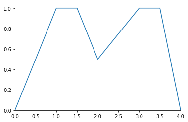>>> from floulib import Multilinear >>> A = Multilinear((0.0, 0.0), (1.0, 1.0), (1.5, 1.0), (2.0, 0.5), (3.0, 1.0), (3.5, 1.0), (4.0, 0.0)) >>> A.plot()
- cut(alpha)¶
Computes the alpha-cut of the multilinear fuzzy subset.
- Parameters:
alpha (float) – The level.
- Returns:
alpha_cut – The alpha-cut.
- Return type:
numpy.ndarray
Example
>>> from floulib import Multilinear >>> alpha = 0.8 >>> A = Multilinear((0.0, 0.0), (1.0, 1.0), (1.5, 1.0), (2.0, 0.5), (3.0, 1.0), (3.5, 1.0), (4.0, 0.0)) >>> B = Multilinear((0.0, alpha), (4.0, alpha)) >>> A.plot().add_plot(B, linestyle = '--') >>> print(A.cut(alpha)) [[1. 1.7] [2.6 3.6]]

- kernel()¶
Returns the kernel of the multilinear fuzzy subset.
- Returns:
The kernel.
- Return type:
numpy.ndarray
Example
>>> from floulib import Multilinear >>> A = Multilinear((0.0, 0.0), (1.0, 1.0), (1.5, 1.0), (2.0, 0.5), (3.0, 1.0), (3.5, 1.0), (4.0, 0.0)) >>> A.plot() >>> print(A.kernel()) [[1. 1.5] [3. 3.5]]
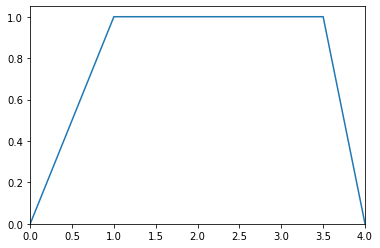>>> B = Multilinear((0.0, 0.0), (1.0, 1.0), (3.5, 1.0), (4.0, 0.0)) >>> B.plot() >>> print(B.kernel()) [[1. 3.5]]
- max()¶
Computes the maximum grade of membership.
- Returns:
The maximum grade of membership.
- Return type:
float
Example
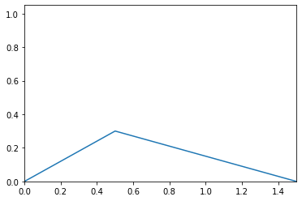>>> from floulib import LR, Multilinear >>> A = Multilinear((0.0, 0.0), (0.5, 0.3), (1.5, 0.0)) >>> A.plot() >>> print(A.max()) 0.3
- membership(x)¶
Computes the grade of membership for x.
- Parameters:
x (float) – Point where the grade of membership is computed.
- Returns:
Grade of membership.
- Return type:
float
Example
>>> from floulib import Multilinear >>> A = Multilinear((0.0, 0.0), (1.0, 1.0), (1.5, 1.0), (2.0, 0.5), (3.0, 1.0), (3.5, 1.0), (4.0, 0.0)) >>> print(A.membership(1.8)) 0.7
- mf(x)¶
Computes the grades of membership for all points in x.
This method can be used as an interface with other libraries.
- Parameters:
x (numpy.ndarray) – The array of points.
- Returns:
y – The grades of membership array.
- Return type:
numpy.ndarray
Example
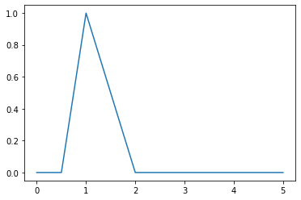>>> from floulib import LR >>> import numpy as np >>> import matplotlib.pyplot as plt >>> A = LR(1, 0.5, 1) >>> x = np.linspace(0, 5, 1000) >>> fig, ax = plt.subplots() >>> ax.plot(x, A.mf(x))
- min()¶
Computes the minimim grade of membership.
- Returns:
The maximum grade of membership.
- Return type:
float
Example
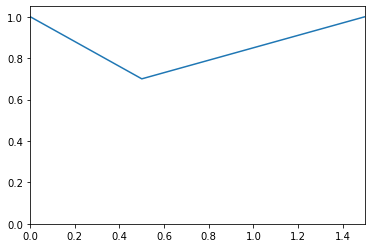>>> from floulib import LR, Multilinear >>> A = Multilinear((0.0, 0.0), (0.5, 0.3), (1.5, 0.0)) >>> (~A).plot() >>> print((~A).min()) 0.7
- necessity(dpi)¶
Computes the necessity of the multilinear fuzzy subset knowing the distribution of possibility dpi.
- Parameters:
dpi (Multilinear) – The possibility distribution.
- Raises:
TypeError – Raised if the parameter is not an instance of
Multilinear.- Returns:
The necessity.
- Return type:
Example
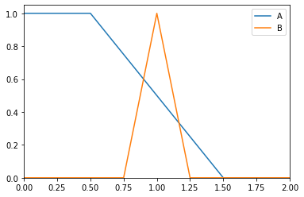>>> from floulib import LR, Multilinear >>> A = Multilinear((0.0, 1.0), (0.5, 1.0), (1.5, 0.0), (2.0, 0.0), label = 'A') >>> B = LR(1, 0.25, 0.25, label = 'B') >>> A.plot().add_plot(B)
>>> print(A.necessity(B)) 0.40000000000000036
- possibility(dpi)¶
Computes the possibility of the multilinear fuzzy subset knowing the distribution of possibility dpi.
- Parameters:
dpi (Multilinear) – The possibility distribution.
- Raises:
TypeError – Raised if the parameter is not an instance of
Multilinear.- Returns:
The possibility.
- Return type:
Example
>>> from floulib import LR, Multilinear >>> A = Multilinear((0.0, 1.0), (0.5, 1.0), (1.5, 0.0), (2.0, 0.0), label = 'A') >>> B = LR(1, 0.25, 0.25, label = 'B') >>> A.plot().add_plot(B)

>>> print(A.possibility(B)) 0.6
- support()¶
Returns the support of the multilinear fuzzy subset.
- Returns:
The kernel.
- Return type:
numpy.ndarray
Example
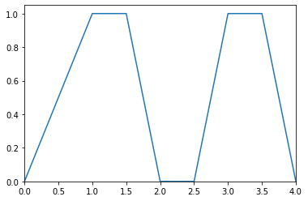>>> from floulib import Multilinear >>> A = Multilinear((0.0, 0.0), (1.0, 1.0), (1.5, 1.0), (2.0, 0.0), (2.5, 0.0), (3.0, 1.0), (3.5, 1.0), (4.0, 0.0)) >>> A.plot() >>> print(A.support()) [[0. 2. ] [2.5 4. ]]
>>> B = Multilinear((0.0, 0.0), (1.0, 1.0), (3.5, 1.0), (4.0, 0.0)) >>> B.plot() >>> print(B.support()) [[0. 4.]]
- translate(delta)¶
Translation over the x-axis all the points whose x-coordinates are greater than the smallest one and smaller than the greatest one.
- Parameters:
delta (float) – The value for the translation.
- Returns:
The translated multilinear fuzzy subset.
- Return type:
Example
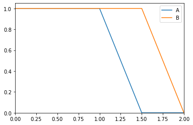>>> from floulib import LR, Multilinear >>> A = Multilinear((0.0, 1.0), (0.5, 1.0), (1.5, 0.0), (2.0, 0.0), label = 'A') >>> B = A.translate(0.5).label('B') >>> A.plot().add_plot(B)
Points (0.5, 1.0) and (1.5, 0.0) are translated by 0.5 but points (0.0, 1.0) and (2.0, 0.0) are not translated.
- universe(x)¶
Sets the universe of discourse.
- Parameters:
x (numpy.ndarray) – The universe of discourse.
- Returns:
The multilinear fuzzy subset.
- Return type:
- Certainty(level)¶
Adds a certainty level to the multilinear fuzzy subset.
This method is generally used with variables in rules. For this reason, it starts with the capital letter C.
- Parameters:
level (float) – The certainty level.
- Returns:
The multilinear fuzzy subset with certainty level.
- Return type:
Example
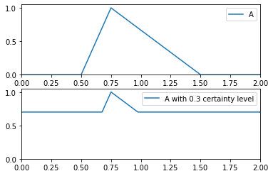>>> from floulib import Multilinear >>> A = Multilinear((0.0, 0.0), (0.5, 0.0), (0.75, 1.0), (1.5, 0.0), (2.0, 0.0), label = 'A') >>> B = A.Certainty(0.3).label('A with 0.3 certainty level') >>> A.plot(nrows = 2).add_plot(B, index = 1)
- Uncertainty(level)¶
Adds an uncertainty level to the multilinear fuzzy subset.
This method is generally used with variables in rules. For this reason, it starts with the capital letter U.
- Parameters:
level (float) – The uncertainty level.
- Returns:
The multilinear fuzzy subset with uncertainty level.
- Return type:
Example
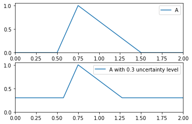>>> from floulib import Multilinear >>> A = Multilinear((0.0, 0.0), (0.5, 0.0), (0.75, 1.0), (1.5, 0.0), (2.0, 0.0), label = 'A') >>> B = A.Uncertainty(0.3).label('A with 0.3 uncertainty level') >>> A.plot(nrows = 2).add_plot(B, index = 1)
- __and__(other)¶
Special method for using the operator & as the intersection of two multilinear fuzzy subsets.
- Parameters:
other (Multilinear) – The RHS multilinear fuzzy subset.
- Raises:
TypeError – Raised if the RHS operand is not an instance of
Multilinear.- Returns:
The intersection.
- Return type:
Example
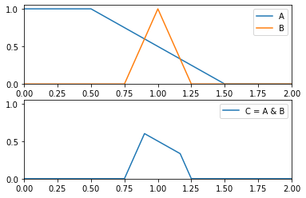>>> from floulib import LR, Multilinear >>> A = Multilinear((0.0, 1.0), (0.5, 1.0), (1.5, 0.0), (2.0, 0.0), label = 'A') >>> B = LR(1, 0.25, 0.25, label = 'B') >>> C = (A & B).label('C = A & B') >>> A.plot(nrows = 2).add_plot(B).add_plot(C, index = 1)
- __call__(x)¶
Special method to transform a multilinear fuzzy subset into a discrete fuzzy subsets.
- Parameters:
x (numpy.ndarray) – The universe of discourse on which the transformation is performed.
- Raises:
TypeError – Raised if the parameter is not an instance of numpy.ndarray.
- Returns:
The discrete fuzzy subset.
- Return type:
Example
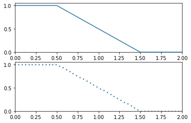>>> from floulib import Multilinear >>> import numpy as np >>> A = Multilinear((0.0, 1.0), (0.5, 1.0), (1.5, 0.0), (2.0, 0.0)) >>> C = A(np.linspace(0, 2, 50)) >>> A.plot(nrows = 2).add_plot(C, index = 1)
- __invert__()¶
Special method for using the unary operator ~ as the complement of a multlinear fuzzy subsets.
- Returns:
The complement.
- Return type:
Example
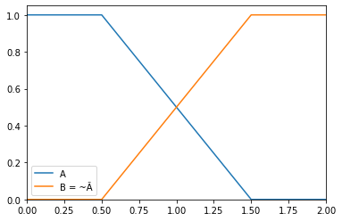>>> from floulib import Multilinear >>> A = Multilinear((0.0, 1.0), (0.5, 1.0), (1.5, 0.0), (2.0, 0.0), label = 'A') >>> B = (~A).label('B = ~Ã') >>> A.plot().add_plot(B)
- __neg__()¶
Special method for using the unary operator - as the opposite of a multlinear fuzzy subsets.
- Returns:
The opposite.
- Return type:
Example
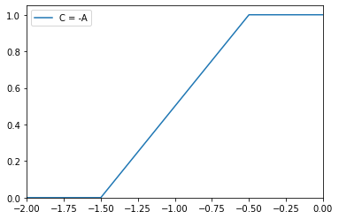>>> from floulib import Multilinear >>> A = Multilinear((0.0, 1.0), (0.5, 1.0), (1.5, 0.0), (2.0, 0.0)) >>> C = (-A ).label('C = -A') >>> C.plot()
- __or__(other)¶
Special method for using the operator | as the union of two multilinear fuzzy subsets.
- Parameters:
other (Multilinear) – The RHS multilinear fuzzy subset.
- Raises:
TypeError – Raised if the RHS operand is not an instance of
Multilinear.- Returns:
The union.
- Return type:
Example
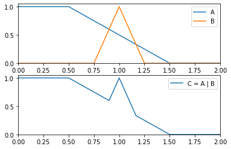>>> from floulib import LR, Multilinear >>> A = Multilinear((0.0, 1.0), (0.5, 1.0), (1.5, 0.0), (2.0, 0.0), label = 'A') >>> B = LR(1, 0.25, 0.25, label = 'B') >>> C = (A | B).label('C = A | B') >>> A.plot(nrows = 2).add_plot(B).add_plot(C, index = 1)
- __rmul__(other)¶
Special method for using the operator * with a number as the LHS operand. Its multiplies the grades of membership of the multilinear fuzzy subset by the LHS operand and truncates them to 1.
- Parameters:
other (int | float) – The LHS operand.
- Raises:
TypeError – Raised the the LHS in not an instance of int or float.
- Returns:
The result.
- Return type:
Example
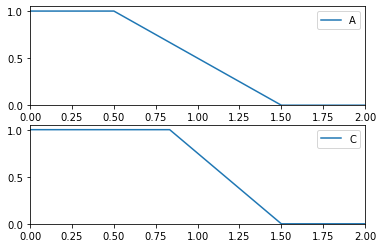>>> from floulib import Multilinear >>> A = Multilinear((0.0, 1.0), (0.5, 1.0), (1.5, 0.0), (2.0, 0.0), label = 'A') >>> C = (1.5*A).label('C') >>> A.plot(nrows = 2).add_plot(C, index = 1)
- __xor__(other)¶
Special method for using the operator ^ as the symetric difference of two multilinear fuzzy subsets.
- Parameters:
other (Multilinear) – The other multilinear fuzzy subset.
- Raises:
TypeError – Raised if other is not an instance of
Multilinear.- Returns:
The symetric difference.
- Return type:
Example
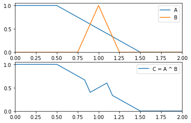>>> from floulib import LR, Multilinear >>> A = Multilinear((0.0, 1.0), (0.5, 1.0), (1.5, 0.0), (2.0, 0.0), label = 'A') >>> B = LR(1, 0.25, 0.25, label = 'B') >>> C = (A ^ B).label('C = A ^ B') >>> A.plot(nrows = 2).add_plot(B).add_plot(C, index = 1)